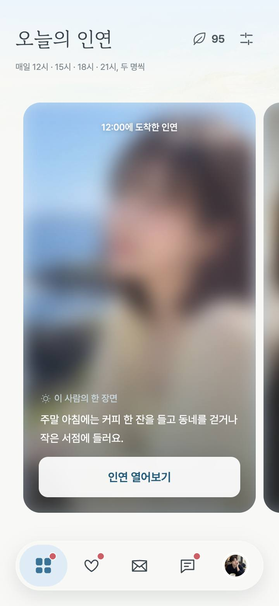
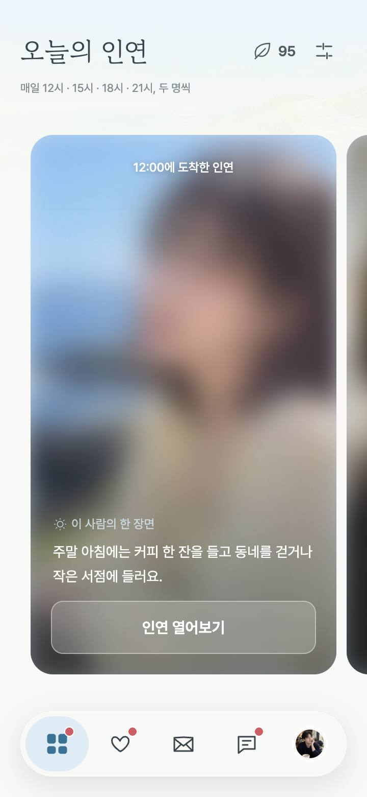
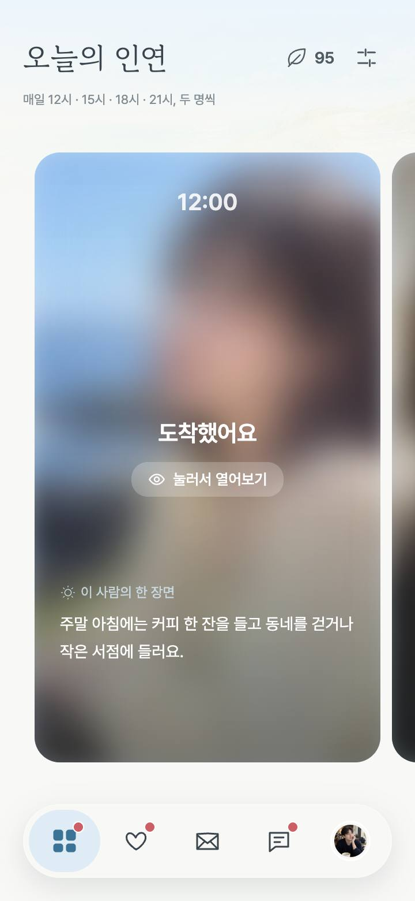
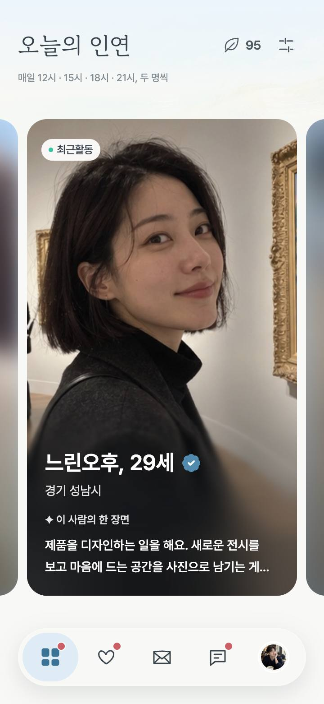
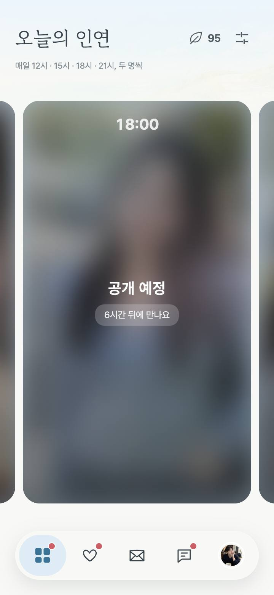

오늘의 인연 · 열기 전 카드 (C 버튼 없이 카드만)
- 왜 바꾸나: 연 뒤를 "버튼 없이 카드만"(C)으로 하면 카드가 화면 아래까지 길어져요. 지금은 열기 전 카드 아래에 "인연 열어보기" 버튼이 따로 있어서 카드가 짧아, 열 때 카드 크기가 바뀌어요.
- 세 안 모두: 열기 전 · 연 뒤 · 공개 전 카드가 같은 크기. "인연 열어보기"를 카드 안으로 넣어요. 카드 어디를 눌러도 열려요.
열기 전




연 뒤 · 공개 전 (세 안 공통)

